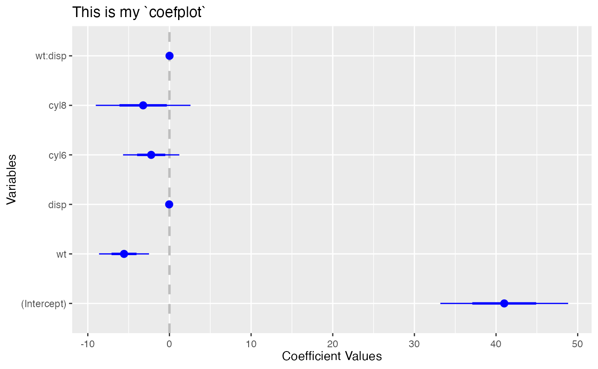
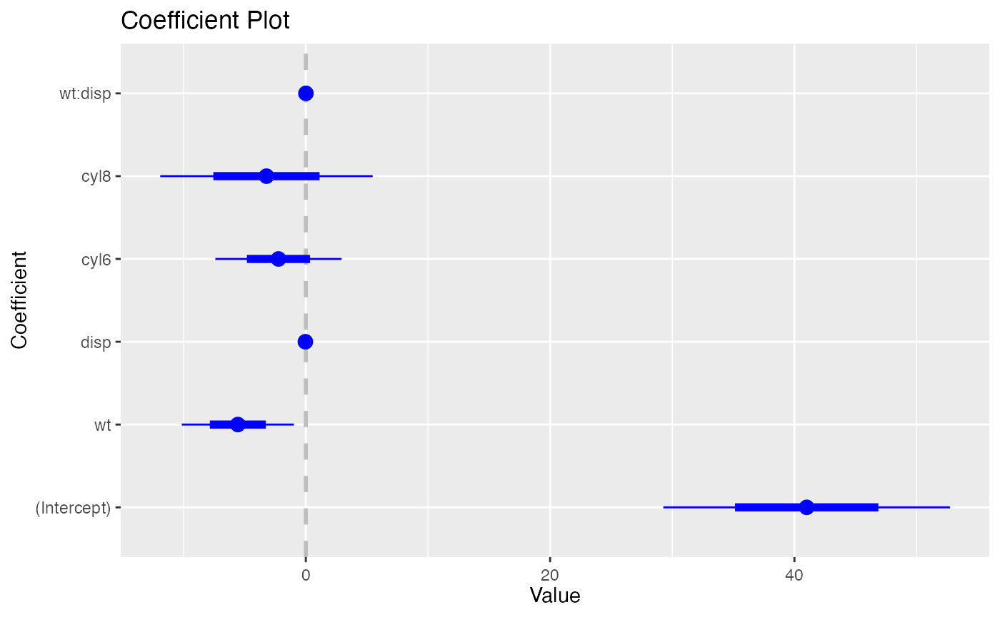
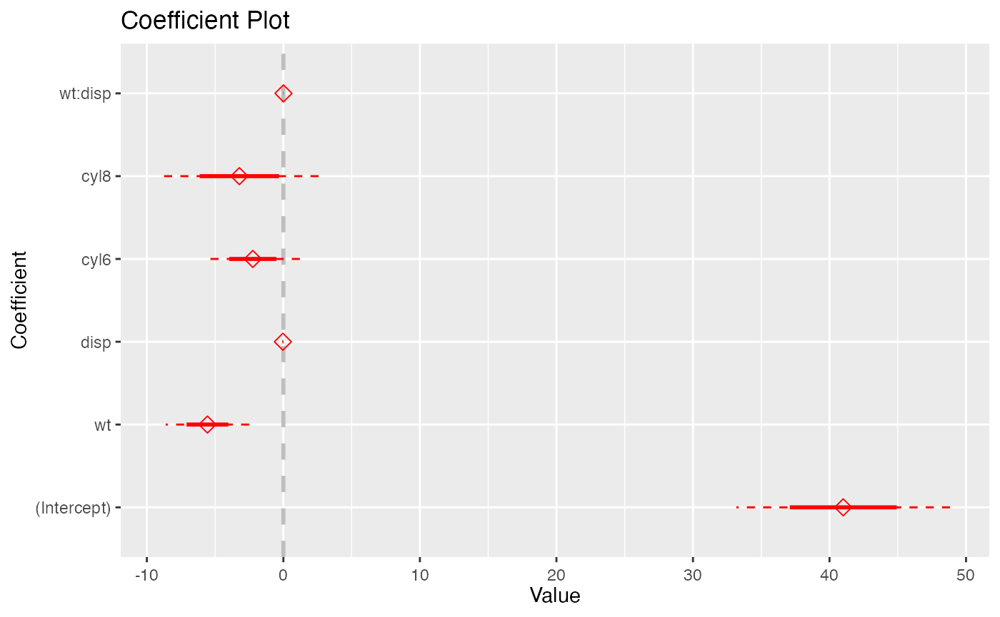

Customising `coefplot`
arguments.Rmd
library(coefplot)
#> Loading required package: ggplot2
dt <- mtcars
dt$cyl <- as.factor(dt$cyl)
model <- lm(mpg ~ wt*disp + cyl, data = dt)Labels
title, xlab, and ylab
coefplot(
model,
title = 'This is my `coefplot`',
xlab = 'Coefficient Values',
ylab = 'Variables'
)
Coefficients
innerCI/outerCI and
lwdInner/lwdOuter and
pointSize
coefplot(
model,
innerCI = 1.5,
lwdInner = 2,
outerCI = 3,
lwdOuter = .5,
pointSize = 3.5
)
color, shape, and
linetype
See the ggplot2 documentation on differentiation
to learn more.
coefplot(
model,
color = 'red',
shape = 23,
outerType = 2
)